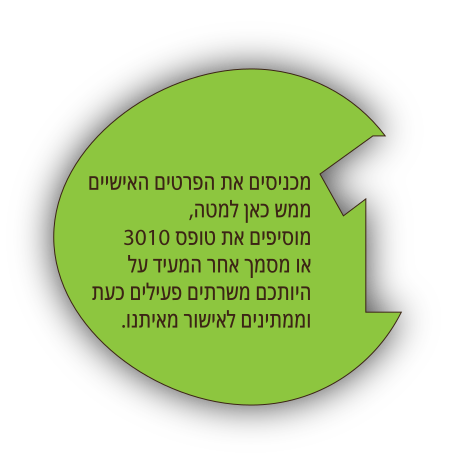
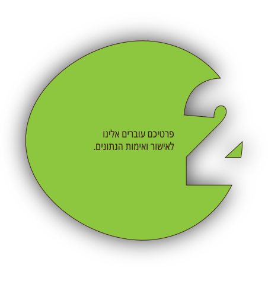
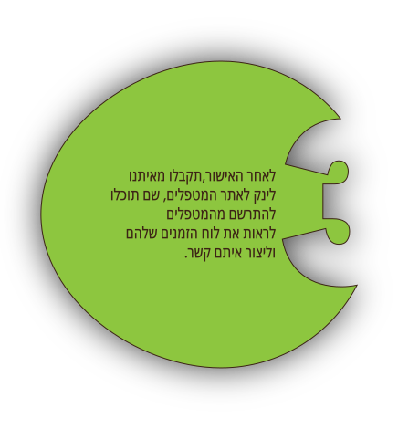
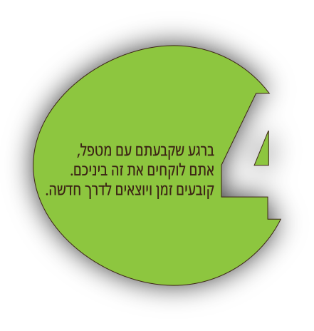

RootIn הוא מיזם חברתי מקצועי, שמטרתו לסייע לכל משרת מילואים במעבר מחירום לשגרה.
בעקבות מלחמת 'חרבות ברזל', נוכחנו לגלות את היכולת הישראלית לעבור משגרה לחירום תוך שעות ספורות. בחלוף השבועות, עלה הצורך ללוות את משרתי המילואים במעבר לשגרה ולפתח את היכולת להסתגל ולתת כלים ליצירת חוסן ובניית השגרה בצורה התואמת למציאות חייו החדשה.
מאחורי המיזם עומדות נשות בריאות הנפש המשרתות במערכה בתור קב"ניות ונשות משא"ן אשר פגשו את הצורך בשטח והגיעו להבנה כי זה הוא צו השעה.
בכדי להחזיר את המשרתים ואת החברה למציאות מתפקדת, יש צורך ביצירת פלטפורמה מתאימה ומודל טיפול ייחודי למתן מענה עבור הזקוקים לכך.
אנחנו מאמינות ביכולת של האדם להתגבר על משברי חיים באופן טבעי, בעזרת תהליך ממוקד קצר טווח בן שישה מפגשים בגישה המבוססת על מודל ייחודי לסיוע במעבר מחירום לשגרה ולהתמקדות בחיים ב'כאן ועכשיו'.
בעזרת צוות מקצועי נוכל לסייע לפרט בהתאקלמות קלה יותר, וכך באופן ישיר גם לחברה, כלכלה ולשוק העבודה לחזור למסלול מהר יותר.




-
כלל המטפלים נבחרו בקפידה – אנשי בריאות נפש (עובדים סוציאליים שעברו הכשרה למודל ייחודי במעבר מחירום לשגרה ע"י RootIn והכשרה צבאית להתמודדות עם אתגרי הלחימה במסגרת צבאית ושירתו ב'חרבות ברזל')
-
תהליך ממוקד קצר טווח בן שישה מפגשים בגישה טיפולית ייחודית לסיוע במעבר מחירום לשגרה.
-
עלות כל מפגש בדאנא, לפי בחירתך ויכולתך - משמעות המילה דאנא, בשפת הפּאלִי של הבודהיזם העתיק, היא נדיבות או נתינה. זו סגולה אנושית חיונית, שיש לה חשיבות ראשונה במעלה בתרגולת הרוחנית הבודהיסטית. כיום, RootIn הינו מיזם המתבסס על תרומות. כל תרומה מאפשרת לעוד מטפלים מוכשרים לסייע לחיילים נוספים. על כן, יש מכסת מקומות משתנה למספר מטופלים.
RootIn מבוסס על תרומות בלבד וכל תרומה תהיה מבורכת ותעזור לנו לעזור לחיילים
שזקוקים לתמיכה לחזור חזרה ל"אזרחות".
הם תרמו מעצמם, זכותינו וחובתנו לאפשר להם
לחזור בקלות לשגרה
ניתן לתרום בעזרת על אחת מהאפשרויות הנ״ל: